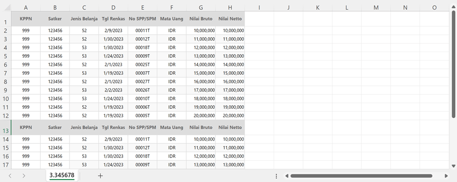

Format Excel SPD
Pastikan- Satu satker per worksheet, satu worksheet per file
- Wajib header di baris pertama, header di baris lainnya akan difilter secara otomatis

| Uraian | Jumlah SPM | Nilai SPM |
| Uraian | Rencana | Realisasi | Deviasi | |
| Uraian | Jumlah SPM | Nominal SPM | |
| Uraian | Jumlah SPM | Nominal SPM | |